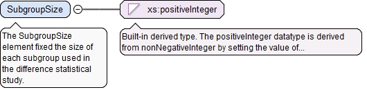

The NumberOfSamples element specifies the number of samplesused in the statistical study.
Diagram
Type
xs:positiveInteger
Properties
content
simple
Source
<xs:element name="NumberOfSamples" type="xs:positiveInteger"><xs:annotation><xs:documentation>The NumberOfSamples element specifies the number of samples used in the statistical study.</xs:documentation></xs:annotation></xs:element>
The SubgroupSize element fixed the size of each subgroupused in the difference statistical study.
Diagram

Type
xs:positiveInteger
Properties
content
simple
fixed
2
Source
<xs:element name="SubgroupSize" type="xs:positiveInteger" fixed="2"><xs:annotation><xs:documentation>The SubgroupSize element fixed the size of each subgroup used in the difference statistical study.</xs:documentation></xs:annotation></xs:element>
The optional xId attribute is a reference to the id of a QIF object in an external document. A QIF object in an external QIF document can be referenced by using references to two QIF ids: the id of the external document reference of type ExternalQIFDocumentReferenceType found in the local document and the id of the object found in the external document.
Source
<xs:element name="ManufacturingProcessId" type="QIFReferenceType" minOccurs="0"><xs:annotation><xs:documentation>The optional ManufacturingProcessId element is a reference to the traceability information for the process on which the study was based.</xs:documentation></xs:annotation></xs:element>
The required n attribute is the number of absolute measurementresults defined in the list.
Source
<xs:element name="AbsoluteDifferences" type="AbsoluteMeasurementsByUnitType" minOccurs="0"><xs:annotation><xs:documentation>The optional AbsoluteDifferences element defines the worst absolute differences between before and after over all characteristics for various units.</xs:documentation></xs:annotation></xs:element>
<xs:element name="RelativeDifference" type="MeasuredDecimalType" minOccurs="0"><xs:annotation><xs:documentation>The optional RelativeDifference element is the worst relative deviation between before and after over all characteristics</xs:documentation></xs:annotation></xs:element>
The ProcessDifferenceStudyResultsType defines information that isrelated the to the results of a difference statistical study wherethe same part was measured before and after a manufacturing processto determine any part distortion caused by that process.
The required id attribute is the QIF id of the statistical studyresults, used for referencing.
Source
<xs:complexType name="ProcessDifferenceStudyResultsType"><xs:annotation><xs:documentation>The ProcessDifferenceStudyResultsType defines information that is related the to the results of a difference statistical study where the same part was measured before and after a manufacturing process to determine any part distortion caused by that process.</xs:documentation></xs:annotation><xs:complexContent><xs:extension base="StatisticalStudyResultsBaseType"><xs:sequence><xs:element name="NumberOfSamples" type="xs:positiveInteger"><xs:annotation><xs:documentation>The NumberOfSamples element specifies the number of samples used in the statistical study.</xs:documentation></xs:annotation></xs:element><xs:element name="SubgroupSize" type="xs:positiveInteger" fixed="2"><xs:annotation><xs:documentation>The SubgroupSize element fixed the size of each subgroup used in the difference statistical study.</xs:documentation></xs:annotation></xs:element><xs:element name="ManufacturingProcessId" type="QIFReferenceType" minOccurs="0"><xs:annotation><xs:documentation>The optional ManufacturingProcessId element is a reference to the traceability information for the process on which the study was based.</xs:documentation></xs:annotation></xs:element><xs:element name="AbsoluteDifferences" type="AbsoluteMeasurementsByUnitType" minOccurs="0"><xs:annotation><xs:documentation>The optional AbsoluteDifferences element defines the worst absolute differences between before and after over all characteristics for various units.</xs:documentation></xs:annotation></xs:element><xs:element name="RelativeDifference" type="MeasuredDecimalType" minOccurs="0"><xs:annotation><xs:documentation>The optional RelativeDifference element is the worst relative deviation between before and after over all characteristics</xs:documentation></xs:annotation></xs:element></xs:sequence></xs:extension></xs:complexContent></xs:complexType>